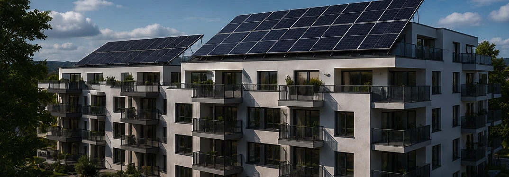
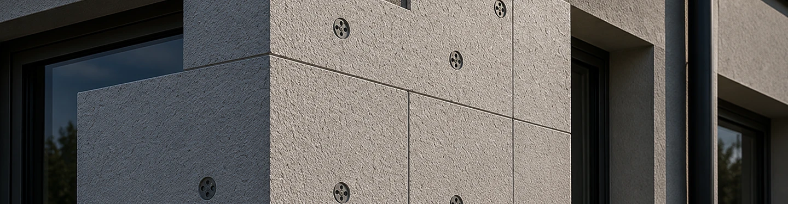

Edukační portál pro výbory SVJ a správce bytových domů. Průvodci energetickými opatřeními, kalkulačky úspor a propojení s ověřenými dodavateli.
EnergoHub je edukační platforma pro správce bytových domů, výborů SVJ a bytových družstev i jednotlivé vlastníky bytů. Vysvětluje, jak energetická opatření (fotovoltaika, jednotné odběrné místo (JOM), tepelná čerpadla atd.) ovlivňují náklady domu a jak se tyto náklady spravedlivě rozdělují mezi jednotlivé byty.
Realizaci provádí dodavatel, kterého si SVJ nebo vlastník bytu sám vybere. Platforma zajišťuje především propojení klienta a dodavatele, financování je vyřešeno systémem provizí od dodavatelů za zprostředkované poptávky, čtenář tedy za obsah webu nic neplatí.
Srozumitelné vysvětlení, jak jednotlivá opatření fungují a jaké úspory obvykle přinášejí.
Posloupnost kroků od zjištění stavu budovy přes výběr řešení až po realizaci a vyúčtování.
Výpočet orientačních úspor a poptávka dodavatelům popsaným podle stejných kritérií.
Průvodce a témata, která uživatelé čtou nejčastěji.
Dotace a financování energetických úprav
Přehled bezúročného úvěru NZÚ – kdo má nárok, výše podpory a jak podat žádost.
Ekonomická návratnost FVE pro bytový dům
Kritéria pro bytový dům: orientace střechy, spotřeba, časový horizont. Kdy investice smysl nedává.
Přechod na JOM – realizace a technické podmínky
Pět fází přechodu bytového domu na JOM od hlasování SVJ po spuštění a rozúčtování.
Kalkulačka úspor
Orientační výpočet na základě počtu bytů a roční spotřeby. Pro podrobné porovnání všech opatření je k dispozici plná kalkulačka.
Úspora s jednotným odběrným místem (JOM) a fotovoltaikou
Orientační výpočet pro kombinaci jednotného odběrného místa (JOM) a fotovoltaiky se sdílením elektřiny mezi byty, při ceně elektřiny 6,0 Kč/kWh. Skutečná úspora závisí na výkonu FVE, orientaci střechy, spotřebě domu a podmínkách smlouvy.
Portál pokrývá všechny fáze rozhodování – od prvního přehledu podmínek až po výběr dodavatele a nastavení rozúčtování.
Přehled podmínek, ve kterých se dům nachází, a identifikace opatření s největším potenciálem úspor.
Porovnání technických a ekonomických parametrů dostupných řešení pro daný typ a stav domu.
SVJ obdrží nabídky od dodavatelů dle zadaných parametrů a vybírá na základě vlastního posouzení.
Nastavení měření, rozúčtování úspor mezi byty a sledování skutečné výkonnosti systému po realizaci.


FAQ
EnergoHub je edukační portál pro předsedy a členy výborů SVJ a bytových družstev. Obsahuje průvodce energetickými úpravami bytových domů – od jednotného odběrného místa přes fotovoltaiku až po tepelná čerpadla a zateplení – a orientační kalkulačku úspor. Portál technologie nedodává ani nerealizuje; přes formulář lze zadat poptávku a obdržet podklady od dodavatelů zaregistrovaných na platformě.
Průvodci jsou stavěni pro předsedy výborů SVJ a bytových družstev, kteří energetické úpravy domu připravují nebo je budou obhajovat na shromáždění. Každý průvodce obsahuje podmínky, za kterých se opatření vyplatí, i situace, kdy se nedoporučuje – včetně čísel s uvedenými předpoklady a přehledu právního rámce.
Portál je financován dodavateli, kteří platí za přístup k poptávkám zaslaným přes platformu. Průvodci a kalkulačka jsou psány jako edukační materiál nezávisle na tom, zda poptávka bude odeslána. Výběr konkrétního dodavatele zůstává zcela na SVJ; portál žádnou firmu nepreferuje ani nepředřazuje.
Kalkulačka odhaduje orientační roční úspory a dobu návratnosti na základě počtu bytů, odhadované spotřeby a zvoleného typu opatření. Výsledky jsou hrubé odhady – nezohledňují konkrétní tarif, stav střechy, technický stav rozvodů ani podmínky případné dotace. Slouží k prvnímu srovnání opatření, ne jako podklad pro investiční rozhodnutí.
Vyplněné kontaktní údaje a výsledky kalkulačky jsou odeslány dodavatelům zaregistrovaným na platformě, jejichž parametry odpovídají zadanému projektu. Odpověď zpravidla přichází do 2–5 pracovních dnů. Poptávka je nezávazná; SVJ není povinno žádný ze zaslaných podkladů přijmout. Kontaktní údaje jsou zpracovávány výhradně pro účely doručení odpovědí.
Ne. Průvodci, kalkulačka a slovník jsou k dispozici bez odeslání poptávky. Poptávkový formulář je volitelný krok pro SVJ, která hledají konkrétní podklady od dodavatelů.
Průvodci jsou v současné době dostupné pro jednotné odběrné místo (JOM) a fotovoltaiku (FVE). Průvodci pro teplo a TUV, výměnu oken a dveří a zateplení jsou v přípravě. Kalkulačka orientačně odhaduje úspory pro všechna čtyři opatření i bez průvodce.
Slovník pojmů vysvětluje základní termíny z oblasti energetiky a práva, které se v průvodcích používají – od JOM a FVE přes distribuční soustavu až po rozúčtování energie. Odkaz na slovník je v patičce stránky.
Zkuste vyhledat dané téma na webu.